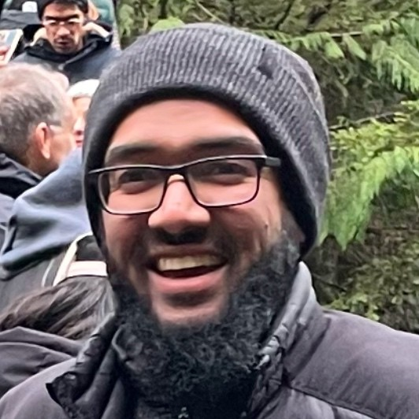

About the Founder

The founder of Free Time Ventures is a visionary leader with a decade of experience at Microsoft. They have contributed to transformative products such as Teams, Outlook, and Office. Driven by a passion for innovation, they have transitioned to building impactful ventures that unlock value in health and productivity.
A recipient of prestigious awards like the GE Foundation Scholarship, the founder's journey includes creating top-rated mobile apps featured in TIME and Mashable, as well as developing high-performing Shopify solutions. Their work reflects a blend of technical expertise, creativity, and a commitment to community development.